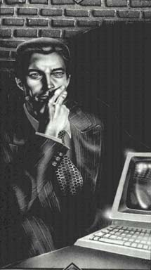

Мерлин (Мерль Кори)Черные волосы, синие глаза, мускулистый. Сын Корвина из Амбера и Дары из Хаоса, Мерлин вырос при дворах Хаоса. Незадолго до исчезновения отца он услышал от Корвина его историю, и с тех пор ему хочется как можно больше узнать о мире своего отца. Он провел несколько лет, странствую по отражениям, на некоторое время поселился на отражении Земля. Теперь он чаще возвращается в Амбер. Интеллект его великолепен, и Мерлин практически ничего не боится. Изучая результаты как прохождения Лабиринта Амбера, так и пересечения Логруса Хаоса, он неохотно пользуется своей силой, поскольку никто при обоих дворах не может предсказать последствия применения его силы. Как и отец, он прекрасный рассказчик, но ему недостает ощущения личной эпичности, присущего Корвину. Наверное, это приходит с возрастом. |
 |